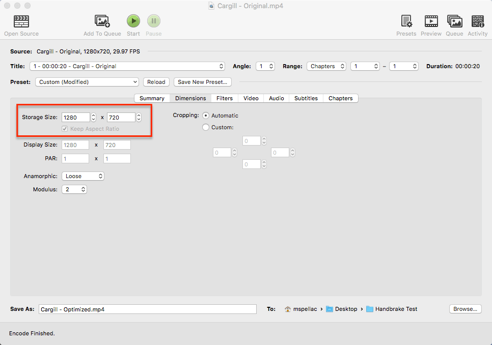
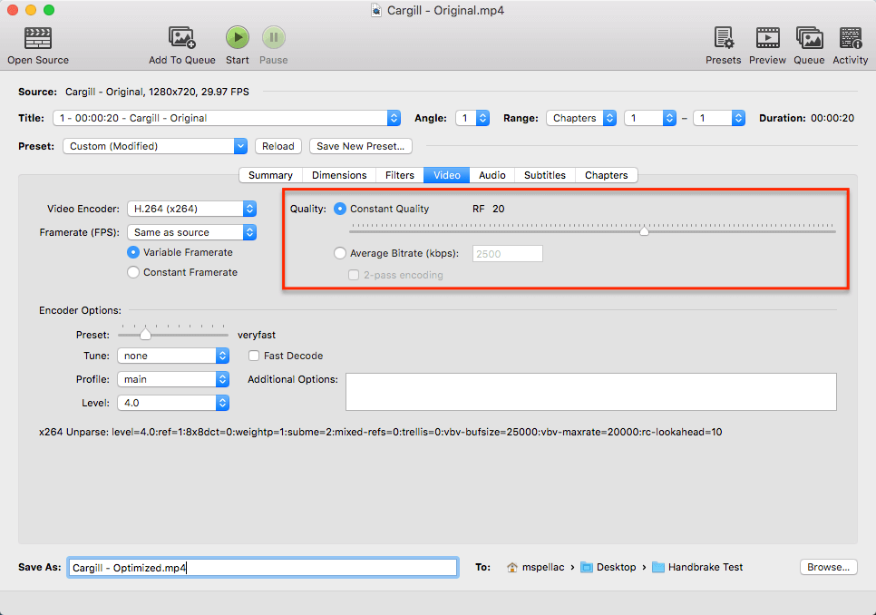
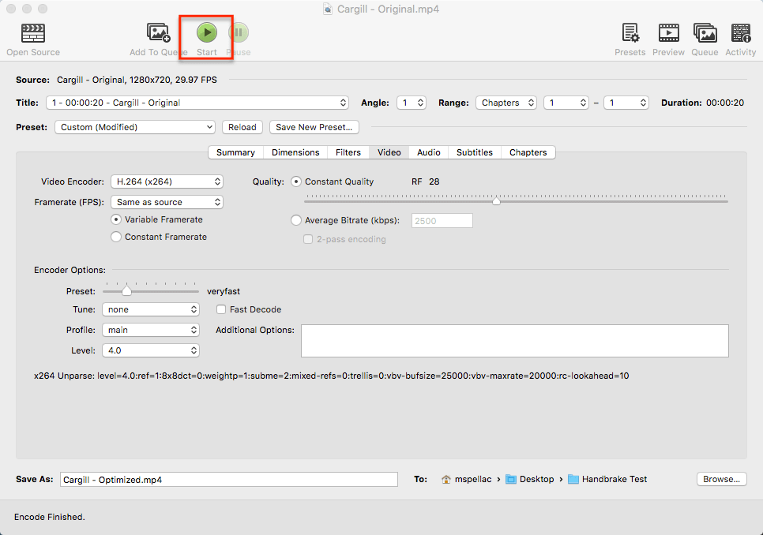

HandBrake Tutorial
This is a brief overview of the steps one might take to produce a more performance friendly video banner using HandBrake, though this lesson can be used to optimize many other types of web based videos.
The performance of our work contributes to the the overall experience users have, so it is very important to deliver assets that will not hinder that experience. HandBrake is terrific for this task and can be downloaded and used on all popular desktop operating systems.
Step 1 - Summary

- Open your source video. HandbBrake is capable of opening up many different kinds of video types.
- Doublecheck the duration of the video. The size of the video will contribute to overall file size, so we generally reccomend a video no longer than 30 seonds.
- Ensure they your output format is MP4. This has pretty much become the defacto standard for web based video.
- Make sure the "Web Optimized" checkbox is clicked on. This will help greatly with streaming the video over networks.
Step 2 - Dimensions

Step 3 - Video

Step 4 - Audio

Step 5 - Encode. Wash. Rinse. Repeat.

Output Examples
Original
- Video Dimensions: 1280 x 720
- Constant Quality: N/A
- Video Size: 20MB
Optimized
- Video Dimensions: 1280 x 720
- Constant Quality: 28
- Output Size: 2.6MB
Optimized (Highest Video Setting)
- Video Dimensions: 1280 x 720
- Constant Quality: 51 (Highest)
- Output Size: 304KB